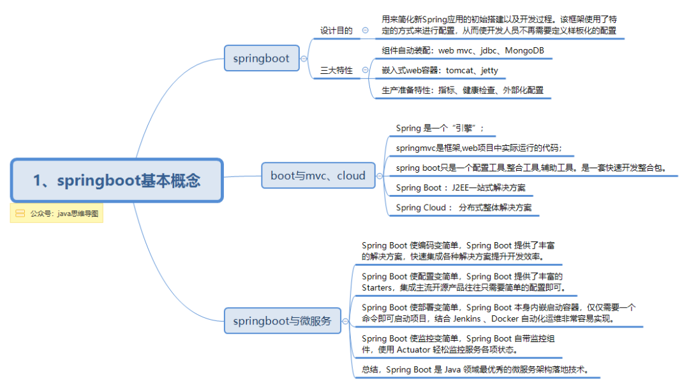
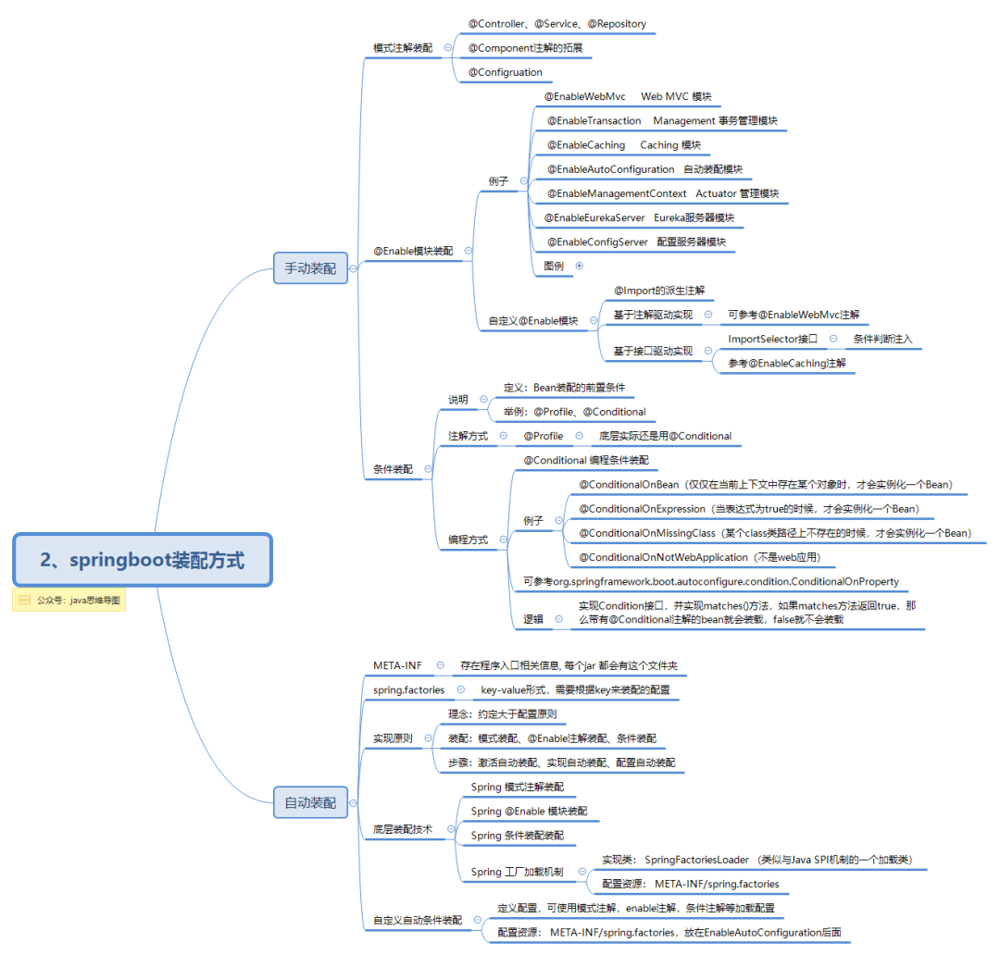
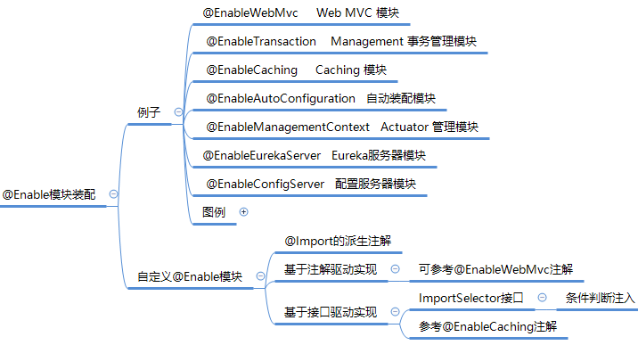
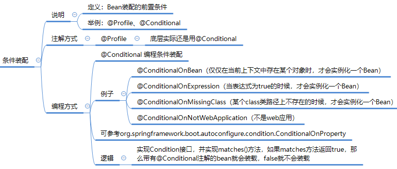

导图梳理springboot手动、自动装配，让springboot不再难懂
思维导图梳理
SpringBoot 基本概念

SpringBoot 装配方式

什么是springboot
在学springboot之前，你必须有spring、spring mvc基础，springboot的诞生其实就是用来简化新Spring应用的初始搭建以及开发过程，该框架使用了特定的方式来进行配置，从而使开发人员不再需要定义样板化的配置。
它集成了大量常用的第三方库配置(例如JDBC, Mongodb, Redis, Mail，rabbitmq等等)，所以在Spring Boot应用中这些第三方库几乎可以零配置的开箱即用(out-of-the-box)，大部分的Spring Boot应用都只需要非常少量的配置代码，开发者能够更加专注于业务逻辑。
也就是说，以前集成ssm框架需要一大堆的xml配置文件，效率底下，而使用了springboot之后，很多时候我们不需要写任何配置了，有时候直接通过@EnableXXX就能开启某个模块的功能。
现在问题来了，你知道@EnableXXX是什么原理吗？
mvc、boot、cloud
这里直接引用网友的总结给大家介绍一下：
Spring 是一个“引擎”；springmvc是框架，web项目中实际运行的代码；spring boot只是一个配置工具，整合工具，辅助工具，是一套快速开发整合包。
Spring Boot ：J2EE一站式解决方案
Spring Cloud ：分布式整体解决方案
约定大于配置的体现
在于减少软件开发人员所需要做出的决定的数量，从而获得简单的好处，而又不失去其中的灵活性。
1、Spring Boot默认提供静态资源目录位置需置于classpath下，目录名需符合如下规则：
优先级：META/resources > resources > static > public
SpringBoot 默认将 /** 所有访问映射到以下目录:
2、spring boot默认的配置文件必须是，也只能是application或application-xxx命名的yml文件或者properties文件，我推荐尽量使用yml文件~
3、多环境配置。该属性可以根据运行环境自动读取不同的配置文件。例如将该属性定义为dev的话，Spring Boot会额外从 application-dev.yml 文件中读取该环境的配置。
4、修改端口号、请求路径
5、starter启动器，开箱即用的Starter依赖让springboot可以实现零配置即可自动完成框架的整合。
- spring-boot-starter-web 嵌入tomcat和web开发需要servlet与jsp支持
- spring-boot-starter-data-jpa 数据库支持
- spring-boot-starter-data-redis redis数据库支持
- spring-boot-starter-data-solr solr支持
- mybatis-spring-boot-starter 第三方的mybatis集成starter
接下来我们来分析一下springboot注入bean有多少种方式
手动装配
在学习springboot中，我喜欢把总结springboot的一些特性，以及使用springboot的一些规律，比如：在springboot加载bean的过程我分为了
- 手动装配
- 模式注解装配
- @Enable模块装配
- 条件装配
- 自动装配
首先来看下手动装配：
模式注解装配
其实就是使用@Component注解，或者@Component注解的拓展，比如@Controller、@Service、@Repository、@Configruation等，这也是我们最常用的一种方式，直接通过spring mvc的注解把组件bean注入到spring容器中。
@Enable模块装配
基于接口驱动实现
当我们需要开启springboot项目的缓存功能时候，我们直接打开@EnableCaching注解就可以注入Caching 模块，这时候我们就可以开心使用@Cacheable、@CacheEvict等注解，这是怎么做到的？
其实你打开@EnableCaching的源码你就能看到：
上面最重要的一句代码就是@Import({CachingConfigurationSelector.class})，你会发现，其实使用@EnableCaching，就是为了导入CachingConfigurationSelector.class这配置类。
而这个CachingConfigurationSelector，其实实现了ImportSelector接口，ImportSelector接口是spring中导入外部配置的核心接口，只有一个方法selectImports，其实就是根据EnableCaching的元数据属性（proxyTargetClass、mode、order），选择出需要转配的Configuration。
|
|
总结其实是这样子，@EnableCaching其实就是根据元数据属性然后选择性条件判断注入需要的配置，比较灵活。
基于注解驱动实现
然后我们来看另一种没有元数据属性的@EnableWebMvc
可以很直观看到，其实@EnableWebMvc其实就是为了导入DelegatingWebMvcConfiguration配置类，某种程度上，可以认为@EnableWebMvc其实和@Import({DelegatingWebMvcConfiguration.class})是对等的，只是起了一个有意义的名字而已。
所以我们总结一下@EnableXXX模块注入，基于接口驱动实现是实现ImportSelector接口，通过注解参数选择需要导入的配置，而基于注解驱动实现其实就是@Import的派生注解，直接导入某个配置类。
思维导图总结如下：

条件装配
所谓条件装配，其实是Bean装配的前置条件，我们先来看一下例子：
- @ConditionalOnBean 仅仅在当前上下文中存在某个对象时，才会实例化一个Bean
- @ConditionalOnExpression 当表达式为true的时候，才会实例化一个Bean
- @ConditionalOnMissingClass 某个class类路径上不存在的时候，才会实例化一个Bean
- @ConditionalOnNotWebApplication 不是web应用
这就是条件装配，当这些条件注解放在某个bean上面的时候，只有满足了条件才能注入bean，这也是为什么springboot能这么智能，知道哪些模块需要开启，哪些不需要，比如当你导入Freemaker的jar包之后，就自动帮你加载Freemaker的的相关配置，其实你看下代码：
这些springboot的自动配置类上面一般是不是都有@ConditionalOnClass注解，这里是说当发现项目有freemarker.template.Configuration.class, FreeMarkerConfigurationFactory.class这两个Class存在时候，我就加载这个FreeMarkerAutoConfiguration，什么时候才会存在这两个Class？当我们导入jar包时候：
所以，当我们没有导入相关jar包时候，我们不用担心springboot会自动开启某些功能，而是会智能判断哪些需要开启，哪些需要跳过。
我们打开@ConditionalOnClass的源码，发现其实是@Conditional拓展出来的注解。
实现逻辑如下：OnClassCondition.class实现Condition接口，并实现matches()方法，如果matches方法返回true，那么带有@Conditional注解的bean就会装载，false就不会装载。
思维导图总结如下：

自动装配
ok，刚才我们已经说了很多关于手动装配部分的东西，现在我们来看下自动装配，其实很多时候自动装配就是手动装配的综合运用，只不过在转配bean或配置类时候，我们不在需要使用@EnableXXX来导入功能，而是通过自动注入方式。
这时候自动注入的条件判断（@Conditional）就显得非常重要了。
我们再用刚才说的Freemaker作为例子，springboot集成freemaker非常简单，只需要导入starter的jar包就会自动实现注入，这个自动集成就是FreeMarkerAutoConfiguration这里配置的。
这里有个问题，你知道为什么springboot会自动去判断和加载FreeMarkerAutoConfiguration这个配置类吗？我没有写类似的@EnableFreemaker，那项目怎么识别的。
其实如果你看过springboot的源码，你就会发现：
org.springframework.boot.autoconfigure.AutoConfigurationImportSelector#getCandidateConfigurations
上面的意思是去扫描项目下所有的META-INF/spring.factories文件，然后把EnableAutoConfiguration.class作为key找出对应的值，这个值是个List。那么我们来看下其中一个spring.factories长什么样子的。
spring-boot-autoconfigure/2.1.2.RELEASE/spring-boot-autoconfigure-2.1.2.RELEASE.jar!/META-INF/spring.factories
可以看到EnableAutoConfiguration作为key有很多个值，比如RabbitMq的自动配置类等，而你认证点看，就能找到FreeMarkerAutoConfiguration这配置类了。
所以情况是这个的，当springboot项目启动时候，项目会去加载所有的spring.factories文件，然后在EnableAutoConfiguration后面的所有配置类其实都是可以实现自动装配的配置，至于需不需要装配，就需要条件装配来判定是否满足特定的条件了。
有了这点基础之后，我们就可以自己去写自动装配了。
第一步、编写需要自动装载的配置类。
说明：@Configuration表示是个配置类
@ConditionalOnSystemProperty表示需要满足当前系统是win10系统
第二步、在resources目录下新建META-INF文件夹，编写spring.factories。
启动springboot之后就会自动加载这个配置类，于是，我们就注入了SayHelloWorld这个业务bean，项目中就可以直接注入使用啦~
有人说，这和直接写个@Configruation有啥区别，区别在于@Configruation的配置必须写在Spring能扫描到的目录下，而自动装配不需要。